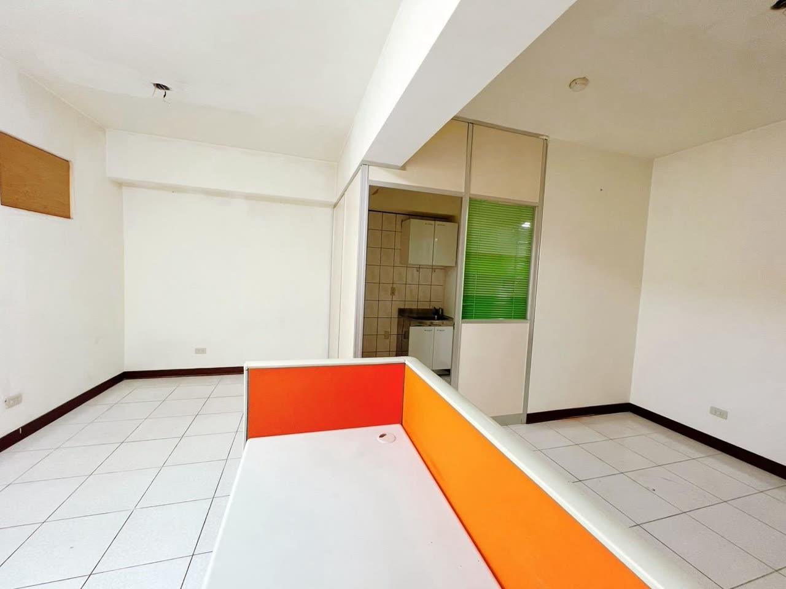

樹林后站金站 完整揭露包
838萬 商業用彈性空間
開價 838 萬｜登記 15.33 坪｜主要用途：商業用｜新北市樹林區・中山路一段（玉山銀行樓上）
本頁資料查核日期 2026-08-22｜委託資料資訊更新日 2026-08-17
本頁不揭露完整門牌、委託內部價格資訊與委託方個人資料。

它不是「比較便宜的住宅」
看到樹林後站商圈、838 萬、15.33 坪，第一個反應通常是「這個總價在這個位置怎麼還買得到」。會有這個價差，關鍵不在屋況，在登記用途——這一件在委託資料上載明的主要用途是商業用，不是住宅用。
同樣的坪數、同樣的位置，登記用途不一樣，能規劃什麼、銀行怎麼估價與核貸、持有與交易的稅費怎麼算，全部都會不一樣。這一頁存在的目的只有一個：把這件事講到你不用再猜，也不用等到簽約前才發現。
838 萬
你每個月會付多少
總價是一個數字，扛不扛得住是另一個。先把首付、月付款、月息攤開，再決定要不要花時間跑這一趟。
試算假設與資料日期：貸款 8 成、30 年期、年利率 2.435%、無寬限期、本息平均攤還；利率採用本站試算工具現行預設值，本頁試算基準日 2026-08-22。
這是試算假設，不是核貸條件，也不是利率承諾。本案主要用途登記為商業用，銀行對非住宅用途的估價與成數審核通常比住宅嚴，8 成是假設值不是可核准的數字，務必先向至少兩家銀行做貸款預審，把商業用途標的實際能貸幾成、幾年問清楚再談價。
首付之外還要另備契稅、印花稅、代書費、地政規費、火險與地震險，本卡都未計入；實際稅費由稽徵機關核定。
按上面的按鈕會帶著 838 萬進入試算工具，工具站預設是兩段式利率（前 2 年 2.185%、第 3 年起 2.435%），算出來約首期月付 25,404 元、跳息後 26,212 元，與上面這張卡的 26,263 元差在利率設定不同，不是哪一邊算錯。
合計怎麼來的：缺點 02 水電（專用迴路 2 迴＋局部換管 1 次，不拆除、清運不另計）$5,000～12,000；缺點 06 固定物（拆除工程 3 坪＋裝潢廢棄物清運 1 車）$6,000～19,500；缺點 01 用途查證、03 無車位、04 公設比、05 公共設備分攤都沒有本戶單獨的修繕費，不計入。數量是粗抓的假設，每一筆單價與出處都在各缺點的「費用」列裡，三站數字不一致全部並列不取平均。
這些是上限粗估，不是報價。實際費用以現場估價為準，檢測沒問題的項目可以是 0；缺點 06 若契約約定由委託方拆除清運，那一條也可以是 0。想把修繕費一起貸，可向往來銀行詢問裝修／修繕相關貸款方案，條件依各銀行規定。
先把這三件事調回來
這三句話我在現場聽過很多次。不是誰笨，是資訊本來就不好查。
查證入口：新北市建管便民服務網、內政部地政司數位櫃臺。
面積與範圍最終以地政機關登載為準，見地政司數位櫃臺申請謄本與建物測量成果圖。
現況照片拍攝日 2026-07-27，看現場當天以實際狀況為準。
先看過一次
再決定要不要跑一趟
這是本案目前唯一一支完整帶看影片，畫面全部是現場實拍，沒有虛擬佈置、沒有調色、沒有修掉任何東西。字卡是剪輯留下的。
影片與上面的照片拍攝時間不同，現場物品的擺放位置以看現場當天為準。這支不是逐一區域走完的長版動線影片；空屋現場好約，想看哪一段細節直接跟我約時間，我陪你走一次。片頭開價數字是滾動動畫，最終顯示的 838 萬才是本案開價。
好的壞的
一起拍給你看
以下八張是現場實拍，沒有虛擬佈置、沒有裝潢示意圖、沒有修掉任何東西。點照片可以放大看細節。
照片皆為現況實拍未經修飾，拍攝日 2026-07-27。本頁不使用任何虛擬佈置或裝潢示意圖，也沒有 AI 生成的畫面。
座向朝西北
主建 9.73 坪
本案座向朝西北，依據是住商不動產售屋資料（樹林站前加盟店）方位欄的登載。先說清楚一件事：有文件登載，不等於已經實測複核——這一項還沒經過地政謄本或現場實地量測確認，所以我把來源跟狀態一起寫給你，不當成已確認的事實塞給你。實際採光與西曬感受，以看現場當天不同時段的實測為準，那天我會帶指北針一起對一次。上圖是現場實拍照片，不是格局圖——格局圖見下方。面積、座向與範圍最終以地政謄本、建物測量成果圖、不動產說明書及買賣契約記載為準。

格局圖來源：住商不動產售屋資料（樹林站前加盟店，合約編號欄空白），文件上原文標註「本格局圖僅供參考，仍需以現況格局為主」，本頁如實保留這句但書；已裁除門牌、屋主等不可公開資訊，只留格局線稿。
缺點我先講完
連費用一起講
每一項都走完五件事：不處理會怎樣、去哪查怎麼查、大概要花多少、要不要驗、你怎麼承擔（預算怎麼算、交易怎麼談、先做哪個、我能做的）。費用只引用有出處的公開報價區間，並標來源與年份；查不到出處的，寫「待查證」，不編數字給你。
- 向委託方索取使用執照影本，或自行申請建物謄本，核對登載的主要用途。
- 洽新北市建管與都市計畫相關單位，查使用分區與登記用途，問清楚你想做的使用內容合不合規。
- 有特定營業計畫的，另洽該目的事業主管機關——不同營業項目各有登記與消防要求。
- 簽約前請地政士協助確認使用執照登載內容與謄本一致。
交易怎麼談：可與委託方協商把「查證結果符合你的使用目的」寫成契約條件，條款內容由地政士擬定；查證沒完成前先不要下定。能不能做你想做的使用內容，可向主管機關查詢，依官方答覆為準。
處理順序：這條不是修繕，是簽約前必須先完成的查證，排在所有工項之前。
我能做的：陪同向主管機關查詢、把查證條件寫進要約或契約建議。
- 先請水電師傅到現場做電路檢測，評估迴路容量夠不夠、老線要不要換。
- 視結果決定是否局部換管、或為高耗電設備加設專用迴路。
- 衛浴與茶水區周邊做一次漏水檢查，有疑慮才進到防水重做。
- 先做檢測再決定要不要施工，不要一開始就編整包裝修預算。
- 電路檢測 $300～500／次（找師傅945，2026-03-24）；另一站列 $100～500／次（PRO360 水電頁，2025-08-11）。
- 專用迴路 $2,500～3,500／迴（PRO360 水電頁，2025-08-11）；迴路安裝 $2,000～3,000／個（找師傅945，2026-03-24）。
- 水管配管 $1,000～4,000／次、通水管 $3,000～5,000／支（PRO360 水電頁，2025-08-11）。
- 水管配管／移位 $1,000～5,000／次（找師傅945，2026-03-24）。
- 抓漏檢測（不用儀器）$500～1,000／次、儀器抓漏 $8,000～20,000／次（找師傅945，2026-03-24）。
- 衛浴防水（彈性水泥塗 2～3 層）$2,000～3,000／坪（找師傅945，2026-03-24）；整間防水重做 $6,000～12,000／間、壁癌處理 $2,500～5,000／坪（PRO360 防水頁，該頁最後更新 2023-11-06，是三個來源中最舊的）。
- 中古標的驗屋 $15,000～24,000／戶；20 坪以下約 $12,000／戶；按坪計價 $500～1,000／坪；複驗 $4,000～6,000／次（PRO360 驗屋頁，2025-06-12）。
- 一般行情 $500～1,000／坪、複驗約初驗費的 5～7 成（鴻宇健康驗屋，2025-07-06）。
- 以本案登記 15.33 坪按坪換算約 $7,700～15,300（換算值，非報價）。
交易怎麼談：檢測或估價單出來後可依報價議價，契約可約定委託方交屋前修復或價金保留，可要求交屋前複驗。
處理順序：安全（電／結構）→ 漏水防水 → 管線 → 美化，這條在第一段「安全」與第三段「管線」，入住前做完。
我能做的：陪同複驗、代約水電師傅估價並做報價單比價、把修繕條件寫進要約或契約建議、交屋清點。
- 看現場當天實際走一圈周邊停車場，問月租金額、有沒有排隊、能不能租到固定位。
- 先用停車場位置查詢工具看清楚哪些場離得近，再實地確認：本站停車場位置查詢（只吃政府開放資料）。
- 面前路寬 20 米，臨停條件當天實際走一次比看資料準。
交易怎麼談：車位不是本標的的一部分，無法約定；可作為你的出價考量。
處理順序：簽約前確認——先用停車場位置查詢工具看一輪，再到現場逐家問空位與月租，也問管委會社區有無可承租車位。
我能做的：陪你繞周邊問月租與空位、把結果列進每月支出試算。
- 比價一律用主建坪數對主建坪數，兩邊基準一致才有意義。
- 看現場帶捲尺，把你真正要用的那幾段實際量一次。
- 申請建物測量成果圖與謄本，核對登記面積與現況範圍。
- 向管理組織問清楚公設包含哪些項目、有沒有約定專用的部分。
交易怎麼談：可要求以謄本坪數為準載明於不動產說明書與契約，面積以地政機關登載為準；面積認定有疑義可向地政機關查詢，依官方登載為準。
處理順序：簽約前確認——先調謄本與測量成果圖核對，再帶捲尺到現場量你要用的那幾段。
我能做的：陪看時帶謄本核對、代調建物測量成果圖、把坪數口徑寫進契約建議。
- 向管委會索取近三年收支報表與公共基金餘額，看得出來這棟養不養得起自己。
- 問電梯保養合約內容與最近一次大修時間，有沒有汰換的決議或討論。
- 調閱消防安檢申報紀錄，看有沒有未完成的缺失改善單。
- 問外牆有沒有整修計畫，這是老舊大樓最常見的大額分攤來源。
- 確認前手有沒有欠繳管理費——欠款的處理方式要寫進契約。
可引用的相關項目（評估外牆整修分攤時參考）：外牆塗防水漆 $600～1,200／坪、外牆重做防水（彈性水泥）$2,000～3,000／坪、高空作業（蜘蛛人）$6,000～10,000／人天（找師傅945，2026-03-24）。來源：70 部門修繕行情偵查表（查證日 2026-08-22），實際費用以現場估價為準。
交易怎麼談：可要求委託方提供管委會近三年收支報表、公共基金餘額與電梯保養紀錄；已決議未繳的分攤金或欠繳管理費，可約定由委託方交屋前結清或價金保留，交屋前可要求管委會出具無欠繳證明。分攤方式依《公寓大廈管理條例》與社區規約，有疑義可向主管機關查詢，依官方答覆為準。
處理順序：不是修繕，是出價前的查證——上面「查證策略」那幾份文件看完再出價。
我能做的：陪同向管委會索取文件、把欠繳結清與分攤金條款寫進要約或契約建議、交屋清點時一併核對管理費結算。
- 把「哪幾項留、哪幾項由委託方拆除清運」逐項寫進不動產標的現況說明書與買賣契約附件，寫到看照片就對得起來。
- 決定要自己拆的，先估拆除費與清運費再談價，不要交屋後才發現要多花一筆。
- 通電前請水電師傅檢查外露線路與插座迴路。
- 拆除工程 $1,000～1,500／坪（PRO360 泥作頁，2025-06-26）。
- 木作家具修繕 $500～1,000／次（找師傅945，2026-03-24）。
- 家戶廢棄物清運 $4,000～7,500／車、裝潢廢棄物 $10,000～15,000／車、樓層搬運加價約＋$500／層（PRO360 清運頁，2025-06-12）。
- 廢棄物處理 $3,000～8,000／車（3.5 噸）、拆除清運工人工資 $2,000～3,000／人天（找師傅945，2026-03-24）。
- 電路檢測 $300～500／次（找師傅945，2026-03-24）。
交易怎麼談：可協商由委託方交屋前拆除清運並復原，或留物由契約約定折價／價金保留；交屋時可要求依契約附件逐項點交。
處理順序：排在所有工項之前——固定物拆完、外露線路檢查完，才看得到真正的牆面與地面狀況，也才能進到缺點 02 的管線工程。
我能做的：把留與拆的清單連同照片寫進現況說明書與契約附件建議、代約拆除清運廠商估價並做報價單比價、交屋清點。
出現任何一項
先暫停
以下是老舊大樓與商業用途標的通用的風險訊號，不是對本案的判定。出現任一項，先停下來，找專業的人到場看過再往下談。
牆面細裂多半是粉刷層問題，出現在樑、柱、剪力牆上的裂縫性質完全不同，要結構技師判斷。
產權問題不會因為現況單純就消失。先請地政士協助釐清清償與塗銷順序，順序沒排好不要付斡旋。
現況跟官方登載對不起來，先請地政士或建管單位協助釐清，不要自己推論原因。
先請地政士或建管單位協助釐清用途沿革，不要自己猜測解讀，也不要相信口頭的「大家都這樣用」。
合理的委託本來就可以出示正式文件。遇到刻意迴避，要多問一句為什麼。
合理的查證要求不應該被閃躲。遇到迴避先暫停，換一個查證管道自己確認。
你是哪一種
順序不一樣
不要照同一套流程硬走。先看你屬於哪一種，再照那一條走。
你要自用規劃
- 先查使用執照登載的主要用途，確認與委託資料一致。
- 把你想做的使用內容講清楚，洽建管與目的事業主管機關問合不合規。
- 請水電師傅做一次現場檢測，抓出整理成本的量級。
- 帶著「商業用途」這四個字去做貸款預審，問到實際成數與年限。
- 四項都有答案了，再談價。前面沒走完就談價，等於拿沒算完的帳去出價。
你要置產出租
- 一樣先查登記用途——能出租給誰、對方能做什麼，取決於這一步。
- 自己去查周邊同類型的出租行情，本頁不給你數字，因為我手上沒有可以對外引用的查證資料。
- 把持有成本算完整：管理費 1,456 元／月、稅費、後續修繕與空置期。
- 做貸款預審，非住宅用途的成數與年限會直接改變你的報酬結構。
- 再回頭看這個總價，決定要不要談。
你還在比較階段
- 比價一律用主建坪數，不要用登記總坪數。
- 同類型成交紀錄自己上內政部實價登錄查，官方的最準。
- 把上面六項缺點當成檢查表，去對你在看的其他每一件。
- 對不上的地方回來問我，這一件不合，我照你的條件幫你找別的。
勾起來的
是你已經確認過的
沒勾的，就是你現在還不知道的事。勾選會留在這台手機裡，看現場那天打開來對一遍就好。
還有 16 項沒確認。全部確認完之前，先不要出價。
這些不要只聽我說
下面每一個都是政府或官方入口，你自己查得到，也應該自己查一次。
這幾題
現在先問完
商業用途的標的，貸款成數會不會比較低？
管理費 1,456 元包含哪些？會不會另外再收？
交屋時前手留下的櫃台跟玻璃隔屏，會一起留給我嗎？
如果查出來我想做的用途不能做，付出去的斡旋金拿得回來嗎？
開價 838 萬，實際會成交在多少？
15.33 坪要繳哪些稅費？大概多少？
這件不是給所有人的
這些條件，你會很有感
- 需要商業用途的彈性空間，想自行規劃使用內容
- 預算 838 萬鎖定樹林後站商圈
- 能接受屋齡 29 年、願意先花小錢做檢測
- 不需要車位
- 看現場時間可以彈性配合，交屋時程想好安排
這些狀況，先確認再說
- 需要明確登記為住宅用途才安心
- 一定要有車位
- 對使用限制零容忍，又還沒洽詢過主管機關
- 預算抓到頂，沒有做檢測與整理的餘裕
- 還沒做過貸款預審，不確定商業用途標的能貸多少
每一項都查得到出處
- 本頁產權、面積、現況等資訊整理自委託方提供之售屋資料與現場紀錄，僅供參考；如與地政機關核發之正式謄本、建物測量成果圖或使用執照不符，一律以官方謄本及正式登記資料為準。簽約前請自行申請最新謄本查證。
- 開價、面積、樓層、屋齡、管理費與現況：委託銷售資料，委託資料資訊更新日 2026-08-17，本頁查核日 2026-08-22；委託合約編號未附於帶看資料，尚未取得。登記面積與範圍以地政機關登載為準。
- 主要用途登記為商業用：委託資料明載。本頁不就其可作特定使用內容之合法性做任何聲明或擔保；使用分區與登記用途以使用執照及主管機關認定為準，請洽新北市建管相關單位或委請地政士查證。
- 大樓總樓層與總戶數：住商不動產售屋資料登載地上13層、地下2層，本戶所在10F；每層5戶、社區總戶74戶。最終仍以建物謄本與使用執照登載為準。
- 照片：現場實拍原始素材，拍攝日 2026-07-27，未使用虛擬佈置、AI 生成裝修示意或修圖。內部帶看單影像含完整門牌與內部價格資訊，未收入本頁。
- 座向：朝西北——來源為住商不動產售屋資料（樹林站前加盟店）方位欄登載；尚未經地政謄本或現場實測複核，實際採光與西曬以現場實測為準。格局圖見上方「座向與可用面積」段，來源同一份文件，已裁除門牌等不可公開資訊。
- 樹林後火車站距離：實際公尺數尚未查證完成，本頁不寫；依規範距離只寫公尺（距離依 Google 地圖）。生活圈機能點（樹林後火車站商圈、博愛市場、保安市場）依委託資料所載，實際路線請以 Google 地圖確認。
- 同類型成交紀錄：本頁未列具體成交數字，請自行至內政部不動產交易實價查詢服務網查證，以該網站公告為準。
- 修繕、清運與驗屋費用區間：整理自 70 部門修繕行情偵查表（查證日 2026-08-22），原始來源為 PRO360 達人網、找師傅945、鴻宇健康驗屋等公開報價頁面；各站標示的更新日不同，已逐筆於文中標註。三站數字不一致是常態，本頁全部並列不取平均。實際費用以現場估價為準，本頁不做費用擔保。
- 貸款試算：以一般常見預設條件模擬，非銀行核貸承諾；商業用途標的之核貸成數與年限以承貸銀行核准為準，通常較住宅保守。試算基準日 2026-08-22。
- 交易應揭露事項：內政部公告之成屋買賣定型化契約應記載及不得記載事項、不動產標的現況說明書，原文見全國法規資料庫。
上面這一整頁，我知道看起來很多。要查的、要問的、要花的，一項一項列出來，甚至有點嚇人。
但你真正在追求的，其實不是把這些都查完。是做決定的那一刻，心裡不用再猜——不管你最後是買下來，還是說一句「這件不適合我」，兩個答案都好，怕的是你在資訊不足的狀態下選了一個，然後用往後好幾年去承擔。
這一件我沒有替它遮什麼。用途登記是商業用，屋齡 29 年，沒有車位，前手的東西還留在現場——這些我全部寫在你面前，是因為藏了也沒有用，謄本與使用執照一調就知道。與其等到簽約前才發現，不如第一句就講。
看清楚才選的，是安穩；
沒看清楚就選的，是懸著。
願你這一次，選的是安穩。
這一頁能幫你把方向抓對，但每個人的狀況都不一樣。真的要動手之前，還是找專業的人幫你看過一次，那一趟不會白跑。
- 從有意願到簽約，正式流程是這樣走的：收斡旋之前會先跟你做一次資料核對；斡旋與買賣契約的談判基礎是官方謄本與現場實際現況，不是這一頁；買賣意向與條件一律再透過合法代書向雙方布達確認。
- 本頁是標的資訊整理，不是買賣契約，也不構成要約或要約引誘；實際交易條件以雙方簽署之書面契約為準。看不看現場、出不出價完全由你決定。
- 本頁為一般性資訊整理，不構成法律、稅務、財務或投資建議，也不因閱讀本頁而成立任何委任或諮詢關係。
- 資訊可能因法令修訂或個案事實而變動，相關內容不負法律責任，作者與所屬經紀業不對依本頁內容所為之決定負擔法律責任。
- 實際個案請洽律師、地政士、會計師、稅務機關或各該主管機關確認後再行動；特定使用內容是否合法可行，務必先洽目的事業主管機關。
- 本頁與相關影片文宣如有誤植，歡迎留言或私訊指正，我們會儘速查證更正。
- 本頁資訊僅反映查核日期當下狀況，具時效性，逾 30 天請向本人確認最新現況。
- 為避免標的已售出或委託異動仍在推廣，看現場前請先用官方 LINE 或公司電話 02-2687-8822 確認最新狀態。
上面這一行可以直接長按全選複製。